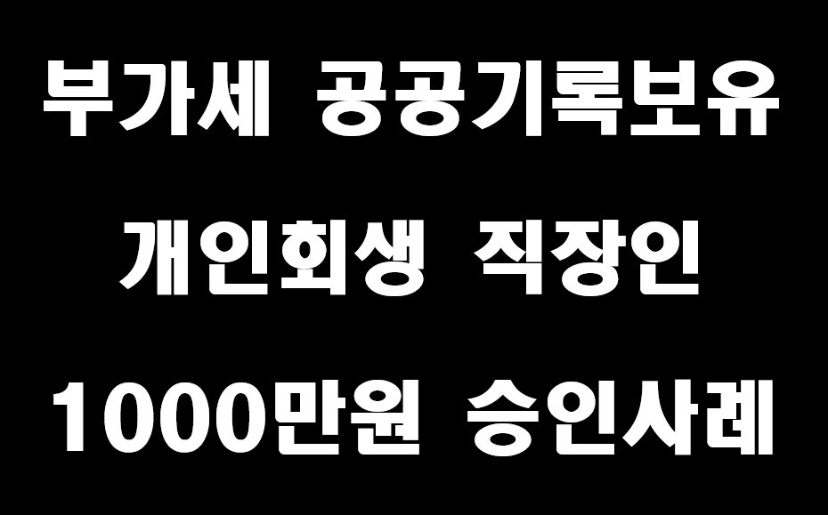
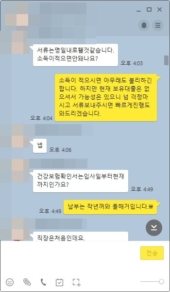
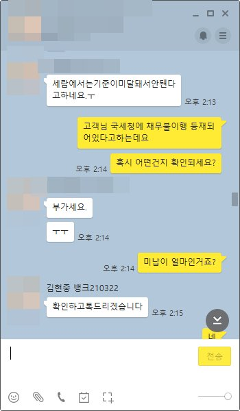
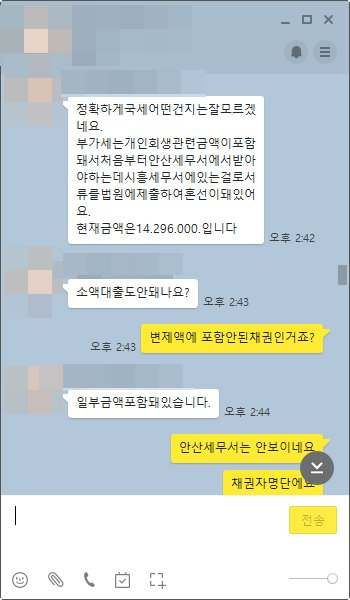
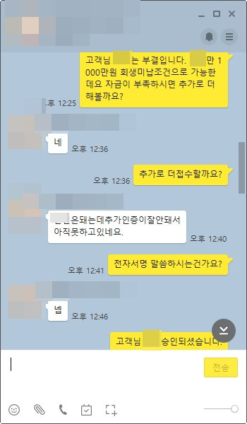

부가세 공공기록보유 개인회생직장인 1000만원 승인사례

안녕하세요~ 오늘은 제가 상담드린 김** 고객님의 대출 사례를 안내해 드리겠습니다.
김** 고객님은 4대보험 직장인으로 급여는 290만원이셨고 변제금은 90만원 정도 납부를 하셨습니다. 고객님께서는 개인회생중으로 31회중 1.98회가미납이셨고 보유대출은 전혀없으셨습니다. 보유대출이 없기때문에 대출가능성은 높으셨으나 무슨일때문인지 대출진행시 전부 부결되셨고 자금마련하는데 어려움이 있으셔서 저희쪽 뱅크앤론에 대출상담을 하셨습니다.
저는 고객님과 상담후 충분히 대출가능성이 높은데 안나오는 이유를 확인하기위해 진행을 도와드렸고 진행도와 드리는 도중에 고객님께서 과거 사업하실때 부가세미납이 1400만원 조금 안되게 있었고 그 채권을 포함하는 과정에서 법무사가 채권포함을 상이하게 해서 A세무소에서 B세무소로 신고되는 바랍에 해당 부가세 내역이 공공기록에 등재되어 대출진행이 어려웠습니다.
저는 해당부분 관련해서 해당조건을 오픈하고 위 부분이 채권에 포함되어있다면 충분히 가능성 있는 금융사로 안내도와드렸고 그 결과 1000만원의 자금을 확보할수있었습니다. 고객님께서는 해당조건이 있어 대출이 힘든상황에서 대출승인이되어 매우 만족해하셨고 저는 면책이후 현재 보유대출을 낮은금리로 전환할수 있도록 도움도 약속드렸습니다.
아래는 김** 고객님과 상담한 카톡내용이니 많은 도움되셨으면 좋겠습니다. 감사합니다.



